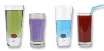

Station 04 · V03 · Original
Willkommen in der KopfüBar

Kommen Sie einfach mal vorbei. Bei uns finden Sie jeden Abend erfrischende Elixire , Unterhaltung, und vielleicht interessiert Sie auch die eine oder andere Runde Dance, Dance, Revolution. Wireless-Zugang ist jederzeit verfügbar, aber BSIEWSM (Bringen Sie Ihren eigenen Webserver mit).
Wegweiser
Sie finden uns unmittelbar im Zentrum der Altstadt von Webville. Falls Sie Probleme haben uns zu finden, werfen Sie einen Blick auf unsere wegbeschreibung Kommen Sie mal vorbei!